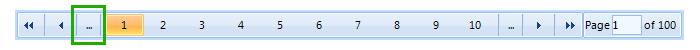

Paging panel
When paging is enabled in RadGridView, a panel is added to the bottom of the grid view element.
It allows users to navigate back and forth over the pages or jump directly to a desired page.

There are a number of properties, which allow you to customize the paging panel to your specific needs.
You can access these properties through the RadGridView.GridViewElement.PagingPanelElement. Here is what options you have:
NumericButtonsCount – Controls how many buttons for navigation to concrete pages there are on the panel.

ShowButtonsStripElement – Controls whether the buttons panel is visible.

ShowFirstButton – Controls whether the button navigating to the first page is visible.

ShowPreviousButton – Controls whether the button navigating to the previous page is visible.

ShowFastBackButton – Controls whether the button with three dots is visible. This button moves the grid back X number of pages, where X equals the number of numeric buttons.
ShowFastForwardButton – Controls whether the button with three dots is visible. This button moves the grid forth X number of pages, where X equals the number of numeric buttons.

ShowNextButton – Controls whether the button navigating to the next page is visible.

ShowLastButton – Controls whether the button navigating to the last page is visible.

ShowNumericalButtons – Controls whether the buttons navigating to concrete pages are visible.
ShowTextBoxStripElement – Controls whether the panel allowing users to jump to a concrete page is visible.